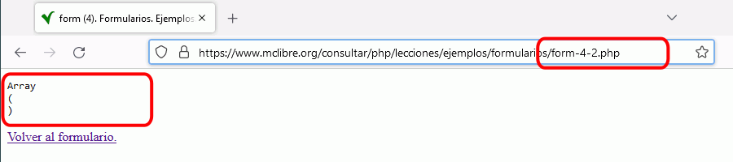
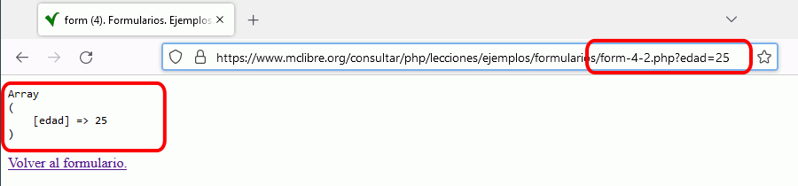
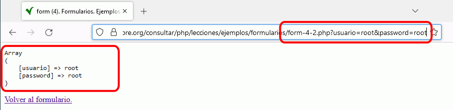

Esta lección comenta el uso de los formularios HTML para conseguir páginas web PHP interactivas.
Introducción
Los formularios son los elementos de las páginas web que permiten a un usuario introducir información en una página web. Así, los formularios nos permiten crear páginas web PHP interactivas en las que el contenido de la página se adapta a la información proporcionada por el usuario.
En el caso más simple, se suelen distribuir las tareas en dos páginas independientes:
Inicialmente, el navegador muestra la primera página, que contiene el formulario. El usuario completa los controles y pulsa el botón Enviar.
Al pulsar el botón Enviar, el navegador muestra la segunda página. Al solicitar la segunda página al servidor, el navegador envía también la información introducida por el usuario en el formulario. El programa PHP que genera la segunda página utiliza la información para personalizar el contenido.
Normalmente, la segunda página incluye un enlace que permite al usuario volver de nuevo a la primera página para empezar de nuevo el proceso.
El ejemplo siguiente corresponde a la imagen anterior (la página con el formulario se llama form-1-1.php y la página que recibe los datos se llama form-1-2.php):
Creación de formularios
Las etiquetas de HTML que permiten la creación de formularios y de los diferentes tipos de controles (cajas de texto, casillas de verificación, botones radio, etc.) se comentan en las lecciones Formularios (1) y Formularios (2) de los apuntes de Páginas web HTML y hojas de estilo CSS.
Este curso de PHP se centra en el tratamiento de los datos proporcionados por el usuario mediante el uso de formularios, no en el diseño de formularios. De hecho, en la mayoría de ejercicios propuestos en estos apuntes, los formularios están incluidos en las plantillas de los ejercicios y el alumno no necesita crearlos, pero se recomienda tener un conocimiento general de las etiquetas y atributos relacionados con formularios.
Recepción de los datos
Cuando un formulario envía los datos a una página PHP, los datos están automáticamente a disposición del programa PHP en una matriz llamada $_REQUEST. Cada dato recibido es un elemento de la matriz $_REQUEST: el índice del elemento es el nombre del control (salvo en el control de tipo imagen) y el valor del elemento es el dato introducido o seleccionado por el usuario en el control.
En el siguiente ejemplo, el programa que recibe los datos del formulario simplemente muestra el contenido de la matriz $_REQUEST utilizando la función print_r() que muestra los índices y valores de la matriz. La página con el formulario se llama form-2-1.php y la página que recibe los datos se llama form-2-2.php
Como se puede comprobar en el ejemplo anterior, el control de caja de texto crea siempre un elemento en la matriz $_REQUEST (aunque la caja de texto se deje vacía), mientras que el botón radio solamente crea un elemento en la matriz $_REQUEST si se elige una de las opciones del botón radio.
En la lección Controles en formularios de estos apuntes se detallan las particularidades de cada tipo de control.
Visibilidad de los datos enviados: el atributo method
El atributo method de la etiqueta <form> permite elegir si la información de los controles se incluye en la URL de llamada a la página (method="get") o se incluyen en las cabeceras HTTP (method="post"). Si no se incluye el atributo, el comportamiento es el mismo que con get.
La diferencia es que con el valor get se pueden ver en la barra de dirección los nombres de los controles y los valores introducidos por el usuario, mientras que con el valor post no. Los datos recibidos son los mismos y desde el punto de vista de la seguridad ambos métodos son equivalentes (es decir, inseguros si se utiliza http y seguros si se utiliza https).
Normalmente, los formularios disponibles en Internet utilizan el método post, de manera que las URL sean más "limpias" al no contener los datos de los formularios. Pero en estos apuntes, los formularios utilizan el método get, de manera que se puedan simular fácilmente ataques de inyección, como se comenta en el apartado siguiente.
Formulario con post
El formulario envía el valor de un control incluyéndolo en una cabecera HTTP, que no es visible para el usuario, como se ve en el ejemplo siguiente:
El formulario envía el valor de un control incluyéndolo al final de la URL, añadiendo un interrogante, el nombre del control, un signo igual y el valor (es decir, ?nombre=valor), como se puede comprobar en el ejemplo siguiente. Para poder ver las URL en su navegador, abra el ejemplo en una pestaña haciendo clic en el icono de enlace al ejemplo situado a la derecha del ejemplo.
En caso de que haya varios controles que envíen información en un formulario con get, los nombres y valores aparecen en la barra de dirección separados por el carácter ampersand (&), como nombre1=valor1&nombre2=valor2&..., como se puede comprobar en el ejemplo siguiente. Para poder ver las URL en su navegador, abra el ejemplo en una pestaña haciendo clic en el icono de enlace al ejemplo situado a la derecha del ejemplo.
PHP incluye en la matriz $_REQUEST todos los datos que llegan junto con la petición de la página, tanto si están incluidos en la URL como si están incluidos en cabeceras HTTP. PHP también crea otras dos matrices, $_GET y $_POST, que contienen los datos recibidos por uno de los métodos, $_GET los recibidos en la URL (get) y $_POST los recibidos en cabeceras (post).
Ataques de inyección
Es importante ser consciente de que cualquier página PHP puede recibir datos y que se pueden enviar datos a cualquier página PHP. Enviar datos a una página que no espera recibir datos no suele afectar al funcionamiento de la página y por tanto no suele suponer un riesgo de seguridad, pero si hablamos de una página que espera recibir datos de un formulario, entonces estamos ante la posibilidad de que la página sea "atacada" con datos inesperados que sí pueden afectar a su funcionamiento. Este tipo de ataques se denominan en general ataques de inyección y pueden ser de muy diversa naturaleza, según cuál sea el objetivo del ataque.
Por ello, una página que reciba datos de un formulario debe protegerse ante este tipo de ataques. Por ejemplo, debe funcionar correctamente aunque no le lleguen los datos esperados o aunque los datos no tengan el formato esperado.
Para realizar un ataque de inyección, basta con editar la URL y modificar los datos, borrando, modificando o añadiendo nuevos datos, respetando la notación ?clave1=valor1&clave2=valor2 .... Puede abrir el ejemplo siguiente en una nueva pestaña y modificar la URL como se muestra en las capturas siguientes.
En este caso se ha editado la URL borrando los datos, por lo que la matriz $_REQUEST no contiene ningún elemento:

En este caso se ha editado la URL sustituyendo el dato nombre por edad, que aparece entonces en la matriz $_REQUEST:

En este caso se ha editado la URL incluyendo dos datos, usuario y password, para probar si esta página permite acceder a una parte privada de la web:

Si el programa PHP trabaja con $_REQUEST o $_GET, el ataque de inyección se puede realizar manipulando la URL. Si el programa PHP trabaja con $_POST, el ataque de inyección se tendría que realizar con alguna herramienta que generara las cabeceras HTTP.
Recepción segura de los datos
Los programas que recogen datos de formularios necesitan protegerse de los ataques de inyección. En estos apuntes, se recomienda:
en primer lugar, no utilizar directamente la matriz $_REQUEST, sino recurrir a variables auxiliares creadas a partir de los valores de $_REQUEST, pero realizando sobre unas operaciones básicas que nos eviten problemas posteriores. En la lección Recogida de datos se comentan con detalle esas operaciones básicas y se propone el uso de una función recoge() para la creación de las variables auxiliares.
en segundo lugar, realizar comprobaciones sobre los valores recibidos, para asegurarse de que el programa no trabaja con valores problemáticos (por ejemplo, asegurarse de que se ha recibido un número si se esperaba recibir un número, etc.). Además, estas comprobaciones nos permitirán mostrar avisos al usuario para ayudarle a utilizar correctamente nuestros formularios. En la lección Comprobación de datos se comenta con detalle cómo estructurar los programas para realizar las comprobaciones y mostrar los avisos en su caso.
Las soluciones de los ejercicios propuestos siguen las recomendaciones de estas lecciones.